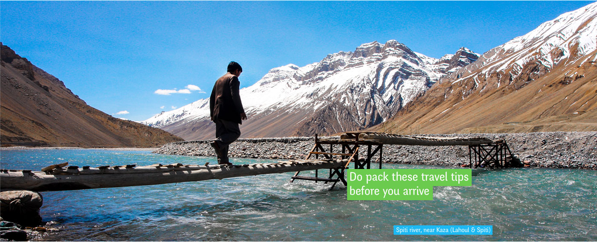

Travel Tips
Travel Safety Tips Do’s & Don’ts
Abide by the advisory as it would help the authorities in ensuring your safe travel to various locations in the state.
1. Himachal is a peaceful and hospitable state. The people are friendly and helpful. Nevertheless, visitors are advised not to take unnecessary risk that may lead them to danger or allow/ provoke anybody else to harm them in any way.
2.Change your money only at authorized foreign exchange outlets / Banks / Hotels. Insist for receipt of money changed.
3.Keep identity card/passport handy while travelling
4.Some buildings and monuments require permission for photography and filming. Contact the nearest Tourism office or the concerned District Administration for guidance and assistance.
5.Keep your valuables in hotel lockers/safe deposit vaults wherever available.
6.STD/ISD/FAX facilities are available at small booths throughout the state.
7.For medical assistance contact Government hospitals and dispensaries or accredited nursing homes/clinics/hospitals or Call 108 free 24X7 ambulance service.
8.For guide maps and information, contact Himachal Tourism Offices.
9.Ensure that your vehicle is securely locked before you leave it.
Don't leave cash or jewellery in your vehicle.
10.Do not encourage beggars.
11.Shop at Government emporiums. Prices are reasonable and quality assured. Himachal Emporium outlets are located at Bilaspur, Chamba, Dharamshala, Mandi, Kullu, Keylong, Reckong Peo, Nahan, Solan, and Shimla. Outside the state, these are at New Delhi, Bangalore and Chandigarh.You can also buy directly from craftsmen located throughout Himachal. But if you plan to carry them overseas, do take a receipt for customs.
12.For electrical appliances, check voltage, 220 V is the standard in the state. Socket type-two pin/three pin.
13.Normal banking hours are 10.00 am to 2.00 pm from Monday to Fridays, and 10.00 am to noon on Saturday. Some banks also have eveningcounters but these rarely deal in foreign currency. Banks remain closed on Sunday and gazette holidays.
14.It is advisable to cover yourself with travel insurance for theft, loss and medi-claim.
15.Unleaded petrol is available at selected stations only.
16.Do not leave your cash and valuables in your hotel rooms. Keep your cash divided in different pockets.
17.Do not trust strangers.
18.During the monsoon season (July-August), be careful while driving on the road because of slippery conditions and land-slides/ rock-falls.